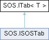

- Generated by
 1.15.0
1.15.0
|
S.O.S - Standard Operations Schematics
SOS SDK Documentation
|
Defines an SOS module acting as a modular, generic UI tab capable of inspecting and interacting with entities of type T . More...

Public Member Functions | |
| bool | CanHandle (T item) |
| Evaluates whether this tab is capable of displaying meaningful information for the given item . | |
| void | Init (GUIFrame container, GUIButton tabButton) |
| Initializes the tab when the widget is constructed. Deferred constructor: store the owned frame and build the static skeleton. | |
| void | Update (T target) |
| Rebuilds the tab's content for the newly selected target . Invoked on the active tab only, and only when the target instance changed. | |
| GUIButton | CreateTabButton (RectTransform rectT, string id) |
Creates the tab bar button, resolving its title and tooltip from localization ({id}.title / {id}.tooltip) with a humanized id fallback. Override to customize text, tooltip or style; the widget assigns selection, click and visibility afterwards. | |
Defines an SOS module acting as a modular, generic UI tab capable of inspecting and interacting with entities of type T .
| T | The data entity type inspected by this tab (e.g., Barotrauma.Prefab or Barotrauma.Character). |
Lifecycle Flow:
Visibility of both the content frame and the button is owned exclusively by the hosting tab widget (GUI.GUITab<T>).
| bool SOS.ITab< T >.CanHandle | ( | T | item | ) |
Evaluates whether this tab is capable of displaying meaningful information for the given item .
| item | The target entity currently selected. |
true if this tab should appear in the tab bar for this entity; otherwise, false.| GUIButton SOS.ITab< T >.CreateTabButton | ( | RectTransform | rectT, |
| string | id ) |
Creates the tab bar button, resolving its title and tooltip from localization ({id}.title / {id}.tooltip) with a humanized id fallback. Override to customize text, tooltip or style; the widget assigns selection, click and visibility afterwards.
| rectT | The tab bar area where the button will live. |
| id | The unique identifier of the tab, used for the localization lookup. |
| void SOS.ITab< T >.Init | ( | GUIFrame | container, |
| GUIButton | tabButton ) |
Initializes the tab when the widget is constructed. Deferred constructor: store the owned frame and build the static skeleton.
| container | The content frame owned by the widget. Store it and build the visual hierarchy on its Barotrauma.RectTransform; never toggle its Visible. |
| tabButton | The tab bar button created via CreateTabButton. Optionally retouch it here (text, style); never toggle Visible/Selected nor wire OnClicked: the widget owns those. |